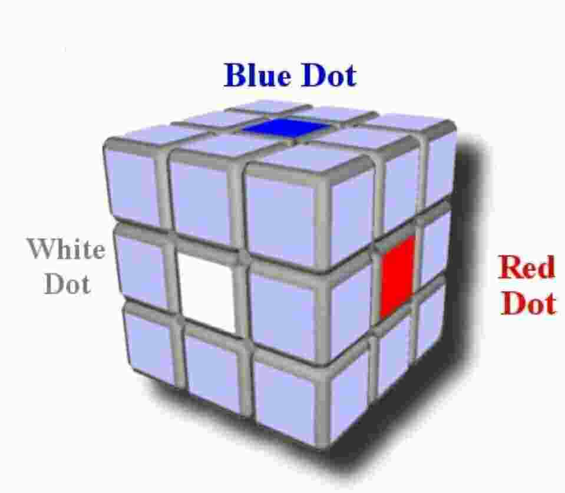
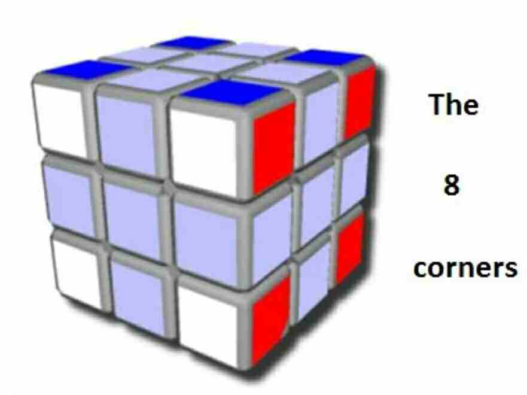
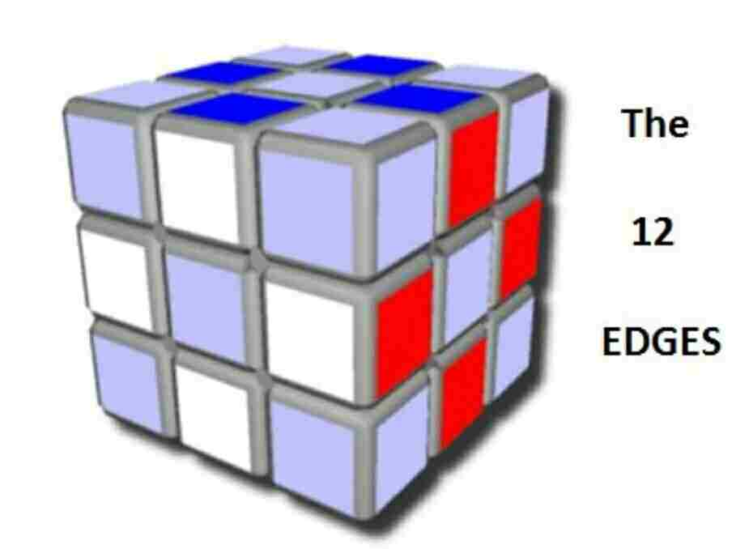
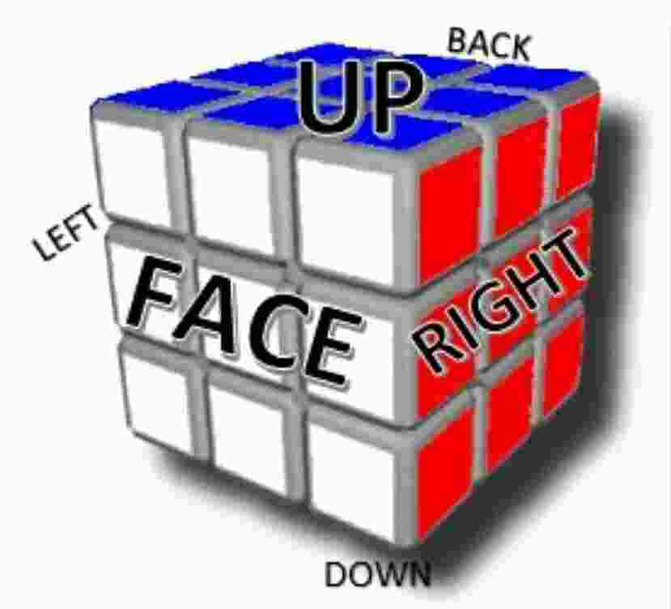
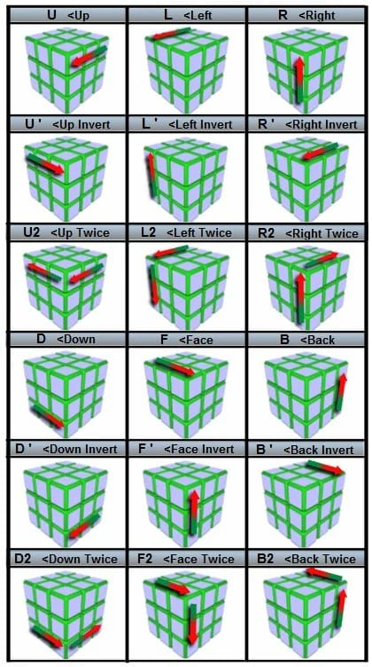

Learn Particular Cube.
Get to Know Your Cube
On each of the 6 faces, the cube has 3 kinds of stickers:
- The Center Dot
- The 4 Corner Stickers
- The 4 Edge Stickers



In total, there are:
- 6 center dots, 1 color each, at the center of each face.
- 12 edges, which have 2 colors each, and are in-between the center and corner
dots.
- 8 corners, which have 3 colors each, and are on the left & right, and top & bottom
of each edge cubie.
There are 20 "cubies" that can be moved around, while the 6 center dots always remain in place.
A cubie is an edge or corner.

A "face" is a side of the cube (9 stickers only). In the picture above you can
see the white face. It is the side of the cube that is always facing you on
the front, no matter what color it is. Its opposite is the back face.
The rules for the faces are the same as the colors:
- Face (F) & back (B) are on opposite sides of the cube, the front and the back.
- Left (L) & right (R) are on the left and right sides of the cube.
- Up (U) & down (D) are on the top and bottom of the cube.
Helpful Hint: Cube Color Schemes
In American models, the following colors are always opposite of each other.
- Green and Blue
- Orange and Red
- White and Yellow
How to Read Rubik's Cube Notations
Rubik's Cube instructions will tell you to rotate to different sides.
So, when the instructions tell you to move up, it means to turn the up side
clockwise 90 degrees (1/4 the way around the top of the cube).
Another way to look at it is to imagine you are looking at the top of the cube
nd you want to turn a hand on a clock from 12 o'clock to 3 o'clock, so you
would turn the top layer to the right one.
Watch below video to get more familier of rubik cube notation.
Also See the Picture below:
